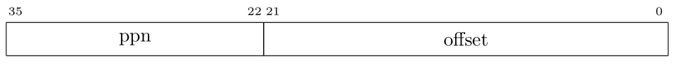
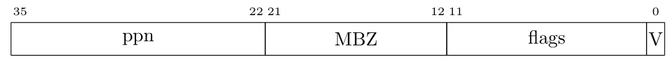
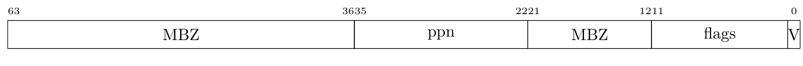
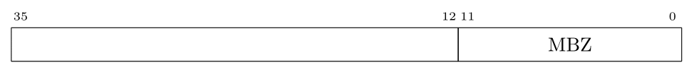
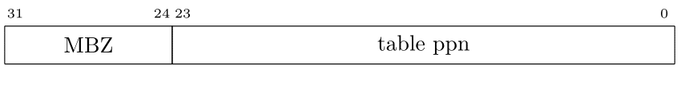
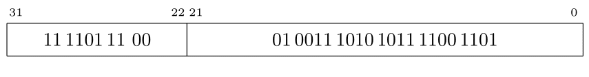

Teaching >>> Past Semesters >>> 2021-2 >>> 2021-2S Intro to Computer Architecture >>> 2022-08-18 >>> 32 ביט כתובת וירטואלית, 36 ביט כתובת פיזית, 4MB גודל ד
כתובת וירטואלית 32, כתובת פיזית 36, גודל דף 4MB
בהתחשב בדוגמא הקודמת, השאלה המתבקשת היא למה? הרי מרחב הכתובות של כל תוכנית נשאר 32GB. והתשובה היא שלכל תוכנית זה אכן לא משנה. אבל כתובת פיזית ברוחב 36 ביטים מאפשרת לבנות זכרון ראשי של 64GB, וכך ניתן יהיה להחזיק יותר תוכניות במקביל בזכרון.
כתובת וירטואלית נראית כך:

גודל דף הוא
4MB
ולכן שדה ההיסט ברוחב 22 ביטים
(222 = 4 × 220 = 4M).
ולכן השדה מספר דף וירטואלי הוא ברוחב 10 ביטים.

כיון שגודל דף וירטואלי וגודל דף פיזי שווים,
כתובת פיזית נראית כלהלן:

כיון שרוחב ה-vpn הוא 10 ביטים, בטבלת התירגום יש לכל היותר 1024 מקומות. מספר זה גדול מכדי להחזיק אוגרים ב-mmu עבורו, כפי שציינו בעבר. לכן ב-mmu יהיה אוגר שיכיל את הכתובת הפיזית של ווקטור בין 1024 כניסות.
בכל כניסה צריך מקום ל-14
ביטים עבור
ppn,
ובנוסף לדגלים.
בהתחשב במבנה כניסה עבור כתובת פיזית של 32 ביטים,
יהיה הגיוני שמבנה כניסה יהיה כלהלן:

כמובן שכניסה בגודל 36 ביטים בווקטור היא לא יעילה חישובית בצורה מזעזעת.
ולכן נשתמש בכניסה ברוחב 8 בתים במקרה זה.
נניח שכניסה בטבלת התרגום נראית כך:

נשאר לנו פריט אחד וזה מבנה האוגר
ב-mmu
שמצביע על טבלת התרגום.
על פניו מדובר פשוט באוגר ברוחב 36 ביטים
שמכיל את כתובת תחילת הווקטור
(וש-12 הביטים הימניים שלו מאופסים).

כמובן שבימינו אף אחד לא מתכנן אוגר ברוחב 36 ביטים.
אזי אוגר ברוחב 8 בתים הוא הגודל הסביר הבא.
הבעיה החמורה יותר היא שבעליל מדובר במכונת 32 ביטים.
ובמכונה כזו אין פקודה שמטעינה ערך לאוגר שרוחבו גדול מ-32 ביטים.
ולכן בדילמה שנוצרה אפשר גם להחליט שהאוגר יהיה ברוחב 32 ביטים!

שימו לב למשמעות של החלטה כזו. דף של תוכנית יכול להמצא בכל דף בזכרון הפיזי. אבל טבלת התרגום יכולה להמצא רק ב-4GB הנמוכים של הזכרון הפיזי. זה דורש ממערכת ההפעלה לנהל את הזכרון בצורה חדשה: להקצות כל מה שאפשר בכתובות גבוהות ורק כשאין ברירה, או שמקצים טבלת תרגום, להשתמש בכתובות הנמוכות.
זה כמובן לא משפיע כהוא זה על התוכניתן במצב משתמש. רק כותבי מערכת ההפעלה סובלים מהחלטה הזו.
כזכור מהדוגמא הקודמת, יש מערכות שבהן באוגר אין את כתובת הטבלה אלא יש בו את מספר הדף הפיזי בו נמצאת הטבלה. פה אכן יש לנו יתרון לא צפוי. יש לנו ארבעה ביטים (ויותר) שאפשר להשתמש בהם: 
Under CONSTRUCTION
דוגמא
הטבלה ארוכה מכדי שנרשום אותה פה... נניח שטבלת התרגום מתחילה בכתובת ABCDE000.
לאיזו כתובת פיזית תתורגם הכתובת הוירטואלית
F713ABCD?
נתרגם לבינרית:

משמע
ה-vpn
הוא
3DC.
ה-vpn
הינו אינדקס לווקטור, ולצורך גישה לזכרון צריך לחשב את הכתובת.
לכן צריך להכפיל את האינדקס פי 4.
זה יותר קל בבינרית:
11 1101 11 002 × 410 = 1111 0111 00002 = F7016
אז עכשיו צריך להסתכל בזכרון בכתובת
ABCDEF70.
נניח שזה התוכן:

ה-valid
הוא אמת.
לכן לשדה
ppn,
שערכו 1101111011,
יש משמעות והוא יחליף את
ה-vpn של הכתובת הוירטואלית
F713ABCD.
כלומר נקבל:

ובהקסה הכתובת הפיזית היא DED3ABCD.